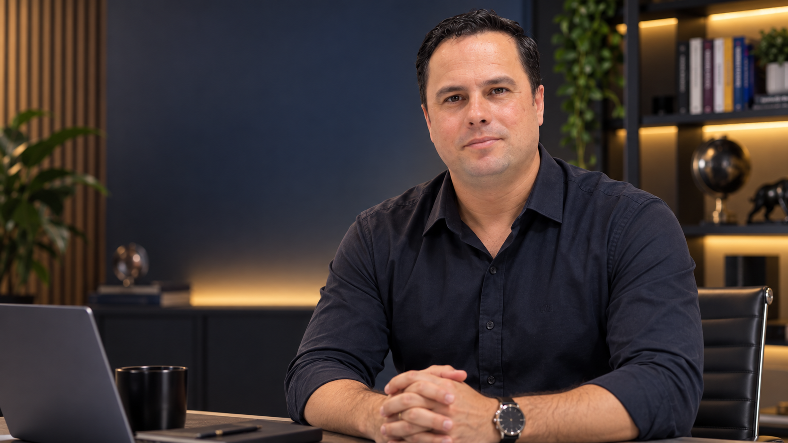
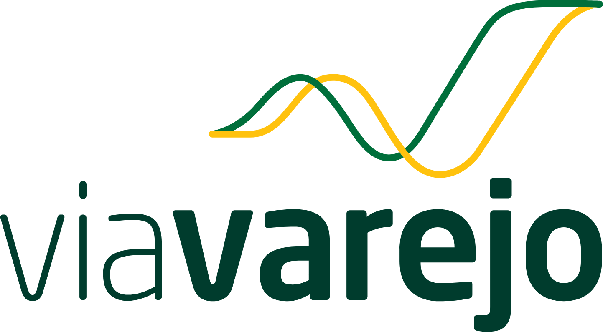
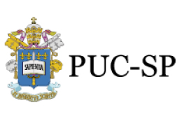
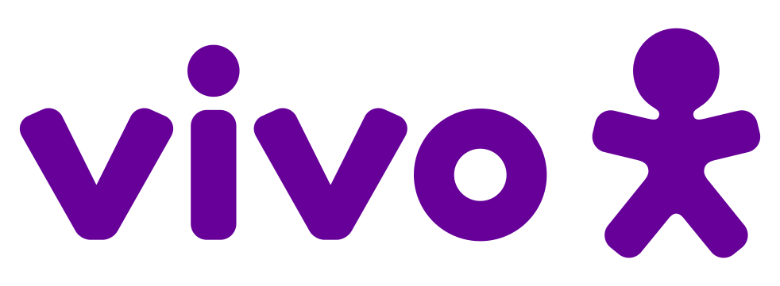
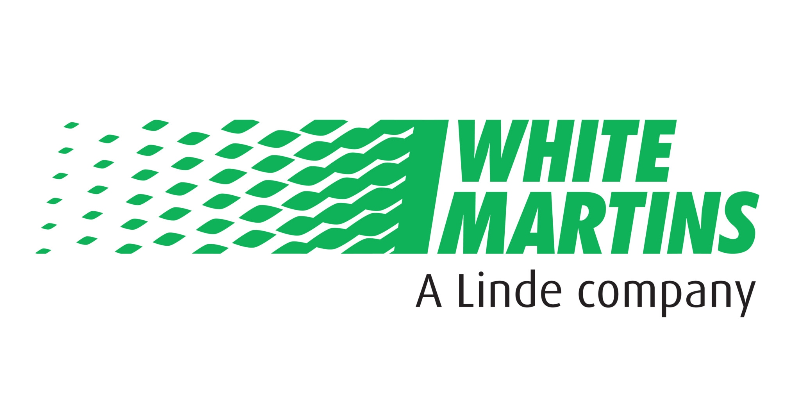

Yellow Belt
Enxergue a melhoria.
Reconheça desperdícios e participe da solução dos problemas do dia a dia.
Aprenda a transformar dados em decisões, reduzir desperdícios
e conduzir melhorias com quem aplica Lean 6 Sigma nas empresas.

No vídeo, conheça a proposta do programa, a certificação e a abordagem prática que orienta as aulas.
Da primeira melhoria aos desafios mais complexos.
Enxergue a melhoria.
Reconheça desperdícios e participe da solução dos problemas do dia a dia.
Faça acontecer.
Analise as causas e conduza projetos para melhorar processos com dados.
Lidere a transformação.
Aprofunde a análise e lidere projetos complexos, conectando equipes e resultados.
Yellow, Green e Black no mesmo pacote.
Certificação validada pela Council for Six Sigma Certification (CSSC).
Grandes empresas usam Lean 6 Sigma para melhorar processos e reduzir desperdícios. Desenvolver esse conhecimento ajuda você a participar de projetos com impacto real no negócio.
Dados mostram onde agir. A prática testa a solução. O aprendizado transforma o processo.
Use dados para entender o problema, encontrar a causa e definir o que precisa melhorar.
Criar soluções. Melhorar processos.
Menos desperdício e retrabalho, de forma contínua.
Conecte o aprendizado ao seu momento profissional. O método pode apoiar diferentes desafios de quem trabalha com processos, projetos e equipes.
Para quem lida com atrasos, falhas e retrabalho e quer resolver esses problemas com método.
Compare evidências, encontre padrões e entenda o que precisa mudar.
Visualização ilustrativaOrganize etapas, indicadores e resultados para conduzir mudanças.
Conecte o conhecimento dos Belts aos desafios da sua carreira.
O desenvolvimento vem da combinação entre estudo e aplicação. Reserve tempo na semana para aprender e conectar o conteúdo aos desafios do trabalho.
anos de experiência
alunos na UpSkills
Master Black Belt pelo CSSC
Alessandro já participou do desenvolvimento de mais de 2.000 alunos. Na formação, conecta os conceitos à prática para preparar você para as certificações e os desafios do trabalho.

+7 bilhões
em faturamento


Metodologia
de Projetos
anos de experiência
alunos desenvolvidos
Construiu programas de melhoria contínua em empresas como


Depoimentos e perfis fictícios, usados apenas para demonstrar o layout.
Receba a apresentação do programa e a condição de matrícula. Nossa equipe explica o conteúdo, os critérios de certificação e o investimento para você decidir.
Se, ao final do programa, a experiência não superar suas expectativas, procure nossa equipe.
A oferta prevê a devolução de 100% do investimento e um bônus pelo tempo dedicado. Consulte a equipe sobre as condições da garantia antes da matrícula.
Veja os pontos mais importantes sobre a formação e o cadastro.
A condição apresentada nesta página é para o pacote de formação Yellow, Green e Black Belt. Preencha o formulário para receber os valores e conhecer os detalhes da matrícula com a equipe.
O programa oferece certificação validada pela Council for Six Sigma Certification (CSSC). Antes da matrícula, confirme com a equipe os requisitos de avaliação, conclusão e emissão dos certificados de cada Belt.
A formação reúne diferentes etapas de desenvolvimento, do Yellow ao Black Belt. Conte à equipe qual é a sua experiência e seu objetivo para entender o ponto de partida e os pré-requisitos do programa.
O programa pede dedicação semanal. A carga horária, o cronograma e o prazo de acesso devem ser confirmados com a equipe para que você possa planejar os estudos junto com sua rotina.
A formação desenvolve conhecimentos para contribuir em projetos de melhoria e ampliar seu repertório profissional. Promoções e contratações dependem também da sua experiência, da aplicação do aprendizado e das oportunidades do mercado.
A equipe da UpSkills entrará em contato para apresentar o programa, esclarecer dúvidas e explicar a condição de matrícula. O cadastro é um pedido de informações; não conclui uma matrícula nem realiza uma cobrança.